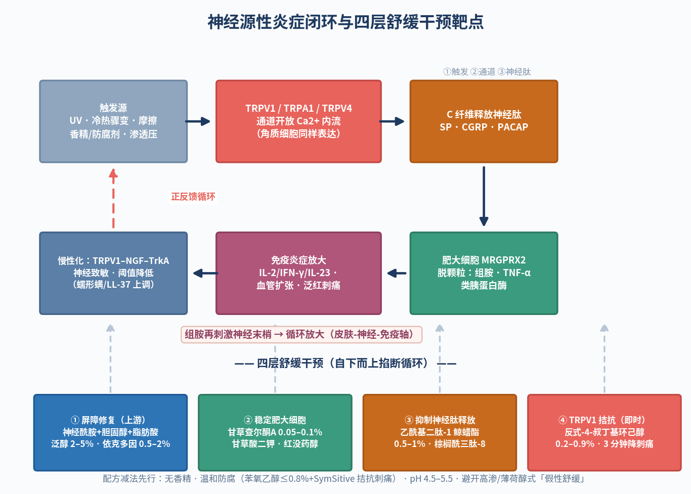

一句话结论（双视角）：敏感肌的泛红、灼热、刺痛不是单纯的「炎症」，而是感觉神经 TRPV1/TRPA1 被过度激活后释放神经肽、与肥大细胞形成正反馈循环——工程师要做「降低神经末梢兴奋性 + 稳定肥大细胞 + 修屏障」三路联控，产品经理要读懂约 40% 人群「成分安全 > 功效 > 品牌」的决策逻辑，用「耐受阈值」而非「消炎」的语言做沟通。
一、机理：敏感肌 = 神经源性炎症的闭环放大
国际学界的最新共识（Annals of Dermatology 2025 综述）把敏感性皮肤定义为一组以「神经源性炎症 + 小纤维神经病变」为核心的综合征：感觉神经的高反应性主要由 TRP 通道（尤其 TRPV1）介导，叠加屏障受损、神经血管高反应性、免疫炎症与微生态紊乱四大因素；我国 2024 年发布的《敏感性皮肤临床诊疗指南》也确认了同一框架。这意味着——皮肤没有肉眼可见的伤口，神经系统却已经把「报警阈值」调低了。
- 触发：紫外线、冷热骤变、辛辣、摩擦、高浓度香精/防腐剂、渗透压波动等刺激皮肤感觉神经末梢（C 纤维与 Aδ 纤维）
- 通道开放：TRPV1（热/灼烧感）、TRPA1（化学刺激）、TRPV4（渗透压/机械牵拉）被激活，Ca²⁺ 内流产生动作电位
- 神经肽释放：C 纤维释放 SP（P物质）、CGRP、PACAP——SP 经 NK-1 受体诱导肥大细胞脱颗粒，CGRP 强效扩张毛细血管，是持续性泛红的关键
- 免疫放大：肥大细胞经 MRGPRX2 释放组胺、类胰蛋白酶、TNF-α，组胺又反过来刺激神经末梢——形成「神经-免疫」正反馈闭环
- 角质层也在参战：TRPV1 同样表达于角质形成细胞、成纤维细胞、T 细胞（激活后释放 IL-2/IFN-γ/TNF-α）与树突细胞（释放 IL-23），把神经信号翻译成全层炎症
- 慢性化：长期激活经 TRPV1–NGF–TrkA 轴让神经末梢更密集、更敏感；蠕形螨蛋白酶（TLR-2/PAR-2）与 LL-37 抗菌肽都会上调该通路，最终「一碰就报警」
二、前沿证据（2025–2026 新进展）
- Ann Dermatol 2025;37(4):173-182：系统综述确认敏感肌核心病理是感觉神经过度激活驱动的神经源性炎症与小纤维神经病变，TRPV1 是最重要的通道靶点；诊断需主观量表（SS-10）与客观测试（TEWL、乳酸刺痛试验）结合
- Int J Mol Sci 2025, 26(5):2366「神经源性玫瑰痤疮」综述：灼热刺痛与可见红斑不成比例；TRPA1/TRPV1/TRPV4 激活 → SP/CGRP/PACAP 释放 → 神经源性血管扩张与渗漏；蠕形螨蛋白酶经 TLR-2/PAR-2 持续点火；医疗端神经调节方案（加巴喷丁类）比常规疗法更有效——反向印证护肤端「神经调节」路线的合理性
- Clin Cosmet Investig Dermatol 2025（GABA 衍生物治疗玫瑰痤疮综述）：TRPV1–NGF–TrkA 轴、LL-37、MRGPRX2-肥大细胞轴是神经源性炎症三大节点；ROS 升高还会上调肥大细胞 TRPA1——抗氧化也是间接舒缓
- Exp Dermatol 2010（Kueper 等，德之馨奠基临床）：重组 hTRPV1 细胞筛选出反式-4-叔丁基环己醇，IC50 = 34±5 μM；30 人临床中 0.4% 添加量显著抑制辣椒素（31.6 ppm）诱导的灼热感（P < 0.0001）——「TRPV1 拮抗 = 即时舒缓」的经典证据
- J Eur Acad Dermatol Venereol 2016（Schoelermann 等）：胀果甘草查尔酮 A + 4-叔丁基环己醇护肤方案用于 I 型玫瑰痤疮 8 周，红斑 a* 值与临床评分显著改善——「TRPV1 拮抗剂 × 抗炎植提」协同的实证范式
产品经理视角：把「神经源性炎症」翻译成消费者语言：「泛红刺痛不是皮肤娇气，是皮肤神经在过度报警。」即时舒缓讲「3 分钟信号拦截、刺痛感减轻」；长效讲「28 天帮皮肤学会淡定、越用越耐受」（耐受阈值叙事）；场景绑定换季、医美后、熬夜压力、口罩摩擦。红线：不说「消炎」「修复神经」「治疗敏感肌/玫瑰痤疮」，只说「舒缓」「淡化泛红外观」「提升皮肤耐受度」。
三、靶点 → 原料 → 添加量 → 配伍要点（工程师速查表）
敏感肌舒缓配方的四层干预架构：即时拦截 → 神经肽抑制 → 肥大细胞稳定 → 屏障修复
| 干预靶点 | 代表原料 | 建议添加量 | 配伍 / pH / 稳定要点 |
|---|---|---|---|
| TRPV1 拮抗（即时拦截刺痛/灼热信号） | 反式-4-叔丁基环己醇（SymSitive® 1609） | 纯品 0.1%–1%，常用 0.2%–0.9%（0.4% 有临床证据） | 油溶性固体，需油相或丙二醇预溶（1609 为 40%–60% 溶液，按 1%–3% 投料）；pH 4–8 稳定；>0.5% 注意防重结晶；与苯氧乙醇配伍可拮抗其刺痛（EP3003254B1） |
| 抑制神经肽释放、提高耐受阈值 | 乙酰基二肽-1 鲸蜡酯（神经胜肽 Neurosensine） | 0.5%–1% | 水溶性小肽，建议乳化后低温相加入；与 TRPV1 拮抗剂叠加构成「即时 + 长效」双通路；温和无配伍禁忌 |
| 神经源性水肿与血管反应 | 棕榈酰三肽-8；海葵仿生肽（SABMP） | 0.01%–0.1%（按供应商推荐） | 避免高温长时间乳化；搭配积雪草苷等血管舒缓植提；适合做精华层级高概念原料 |
| 稳定肥大细胞 / 抗炎放大器 | 胀果甘草查尔酮 A、甘草酸二钾、α-红没药醇、油橄榄叶提取物（橄榄苦苷） | 查尔酮 A 0.05%–0.1%；甘草酸二钾 0.1%–0.5%；红没药醇 0.2%–0.5% | 多靶点抑制 NF-κB 与细胞因子；与 TRPV1 拮抗剂有 8 周临床协同证据；甘草酸二钾在低 pH 易析出需预溶 |
| 屏障修复（从上游掐断刺激源） | 神经酰胺 NP/AP/EOP + 胆固醇 + 游离脂肪酸复配、泛醇 | 神经酰胺复配 0.1%–0.5%；泛醇 2%–5% | 屏障完整度决定 TRPV1 上游刺激强度；仿生脂质按摩尔比仿皮脂配比，微囊/脂质体递送提升渗透；泛醇兼保湿与舒缓 |
| 缓冲渗透压与冷热应激 | 依克多因（Ectoin） | 0.5%–2% | 水相直接添加；极端保护因子缓冲冷热/渗透压波动诱发的通道开放；与全体系低冲突，适合敏感肌基础液 |
配方落地三条硬规则：敏感肌配方的第一原则是「减法」——先减刺激，再谈加功效。
- 减法先行：无香精、温和防腐体系（若用苯氧乙醇控制在 ≤0.8% 并可复配 SymSitive 拮抗其刺痛，或改用对羟基苯乙酮+多元醇体系）；避开高渗体系与强酸强碱；目标 pH 4.5–5.5 贴近皮肤生理
- 薄荷醇不是舒缓：它只激活 TRPM8 冷受体「以凉掩痛」，会掩盖真实问题并可能加重敏感；「真舒缓」要落在 TRPV1 拮抗 + 肥大细胞稳定 + 屏障修复三层结构上
- 宣称留证据链：舒缓功效须做功效宣称评价试验（人体/消费者/实验室任一）；「适用敏感皮肤」特定宣称须人体功效评价试验或消费者使用测试；乳酸刺痛试验、红斑 a* 值、SS-10 量表是行业常用支撑数据
四、市场：40% 的人群、38% 的新品、32.7% 的决策权重
敏感肌已经不是「细分赛道」，而是面部护肤的基本盘。英敏特《2025 中国美容个护成分趋势榜单》显示约 40% 中国消费者自认敏感肌，新品中「适合敏感肌」宣称占比已升至 38%；敏肌人群的购买决策中「成分安全」以 32.7% 排在第一位，高于功效（28.8%）与品牌（14.2%）——成分透明与证据背书优先于品牌叙事，是这个赛道最硬的沟通法则。
- 需求侧：约 40% 消费者自认敏感肌（英敏特 2025）；行业报告估计 2025 年中国敏感肌人口 3.9–5.7 亿——每 10 人中 3–4 人为敏肌
- 新品侧：「适合敏感肌」宣称在面部/颈部护肤新品中占比从 27% 升至 38% 并维持高位；泛醇、依克多因、烟酰胺、甘草酸二钾使用占比三年持续上升
- 痛点洞察：现有产品痛点 TOP1 是「假性舒缓」占 33%（修复效率低 27%、质地厚重 25%）——「即时体感（3 分钟刺痛减轻）+ 28 天客观数据」是破解质疑的组合拳
- 赛道热度：全球神经化妆品市场 2025 年约 16.6 亿美元、预计 2033 年达 31.6 亿美元（CAGR 8.4%，SkyQuest 转引）；重组胶原蛋白、贻贝粘蛋白、蓝铜胜肽为新兴成分
- 场景化创新：熬夜/压力、换季、医美后、口罩摩擦等场景的「神经舒缓」方案成为重要产品视角；玉泽以青蒿复配讲「阻断敏感信号」，理肤泉以神经胜肽讲「提升耐受阈值」——头部品牌已把神经机制写进卖点
五、合规红线（宣称雷区清单）
- 禁用医疗术语：「消炎/抗炎」「修复神经」「治疗敏感肌/玫瑰痤疮/皮炎」等属明示医疗作用，标签与传播一律不可用；机制可以在内部资料讲，不能进宣称
- 舒缓是「要测试的宣称」：按《化妆品功效宣称评价规范》第九条，舒缓须通过功效宣称评价试验（人体/消费者使用测试/实验室任一）并结合文献资料；宣称「适用敏感皮肤」须人体功效评价试验或消费者使用测试
- 原料功效 ≠ 产品功效：引用原料商数据做舒缓宣称时，须证明原料功效与产品宣称的关联性，成品层人体数据最有说服力
- 「即时凉感」不是舒缓证据：TRPM8 冷感掩盖不构成舒缓功效依据，反而带来「假性舒缓」的监管与口碑双重风险
六、今日行动清单
- 工程师①：盘点现有敏感肌 SKU 的防腐体系与苯氧乙醇浓度，评估 0.2%–0.5% 反式-4-叔丁基环己醇「降刺痛」改造的兼容性与成本
- 工程师②：设计「即时舒缓 + 28 天耐受阈值」双终点人体测试方案（乳酸刺痛试验 + 红斑 a* 值 + SS-10 量表），为「真舒缓」主张备好证据
- 工程师③：验证 TRPV1 拮抗剂 × 甘草查尔酮 A × 神经酰胺仿生脂质的稳定性（结晶、pH 漂移、高温离心）与感官质地窗口
- 产品经理①：把「成分安全 > 功效 > 品牌」写进卖点排序，详情页前置成分表解读与试验数据
- 产品经理②：按换季/医美后/熬夜三个场景排内容日历，用「帮皮肤学会淡定」的耐受阈值叙事替代空泛的「修护受损」
- 产品经理③：拆解理肤泉（神经胜肽）、玉泽（青蒿复配）、修丽可/适乐肤舒缓线的话术，寻找「即时体感 + 长效证据」的差异化空位
附图

参考资料与出处链接
- Kueper T, et al. Inhibition of TRPV1 for the treatment of sensitive skin. Exp Dermatol. 2010 (IC50=34±5μM；0.4% 临床 P<0.0001) https://pubmed.ncbi.nlm.nih.gov/20626462/
- Managing a Burning Face: Neurogenic Rosacea. Int J Mol Sci. 2025;26(5):2366 (TRP→SP/CGRP/PACAP 通路、TLR-2/PAR-2) https://www.mdpi.com/1422-0067/26/5/2366
- Updates in the treatment of rosacea with γ-aminobutyric acid derivatives. Clin Cosmet Investig Dermatol. 2025 (TRPV1-NGF-TrkA、MRGPRX2、LL-37) https://dx.doi.org/10.2147/ccid.s550614
- Comprehensive Approaches to Diagnosis and Treatment of Sensitive Skin. Ann Dermatol. 2025;37(4):173-182 (敏感肌=神经源性炎症+小纤维神经病变) https://wprim.whocc.org.cn/admin/article/articleDetail?WPRIMID=1177166&articleId=1245925
- 敏感性皮肤的发病机制及治疗进展（中文综述：TRPV1 在角质细胞/T 细胞/DC 的表达） https://medsci.cn/article/show_article.do?id=2c5386804531
- EP3003254B1：TRPV-1 拮抗剂减少苯氧乙醇刺激（SymSitive 1609 用量 0.05–5%） https://patents.google.com/patent/EP3003254B1/en
- Schoelermann AM, et al. Licochalcone A + 4-t-butylcyclohexanol regimen in rosacea subtype I. JEADV. 2016 (PMID:26805419) https://www.smolecule.com/products/s576687
- 泛红、刺痛、瘙痒？敏感肌的求救信号（TRP 通道与 ET-1 机制科普）——瑞旭集团妆合规 https://zhg.cirs-group.com/resource-center/news-detail/efo4y25vdog0
- 英敏特《2025 中国美容个护成分趋势榜单》解读（40% 自认敏感肌、新品宣称 27%→38%） https://www.sohu.com/a/867973826_120714217
- 艺恩《2025 抗敏修护成分趋势报告》（成分安全 32.7%、假性舒缓 33%） https://www.sgpjbg.com/labels/kangminxiuhuchengfenqushi/1/7416164.html
- 敏感肌：定义、成因机制、护肤原则、产业链与市场趋势（2024《敏感性皮肤临床诊疗指南》、敏感肌人口估计） https://www.sgpjbg.com/news/7069480.html
- 《化妆品功效宣称评价规范》全文（第九条舒缓评价要求、特定宣称要求） https://xmifdc.org.cn/zcfg/hzp/202403/P020240306614546038934.pdf
- 正确认识化妆品功效 合规进行功效宣称——中国食品药品网 https://www.cnpharm.com/c/2022-04-22/823922.shtml
- Neurocosmetics for Facial Redness: A 2026 Guide（神经胜肽/海葵仿生肽/神经化妆品市场规模） https://shop.bonjil.com/blogs/skincare/neurocosmetics-for-facial-redness
- 董银卯《化妆品配方设计6步》（书籍配方设计框架锚点）
- 刘玮《皮肤科学与化妆品功效评价》（功效评价方法锚点）
- Draelos ZD. Cosmeceuticals（功能性护肤成分经典专著锚点）
- Handbook of Cosmetic Science and Technology（化妆品科学技术手册锚点）